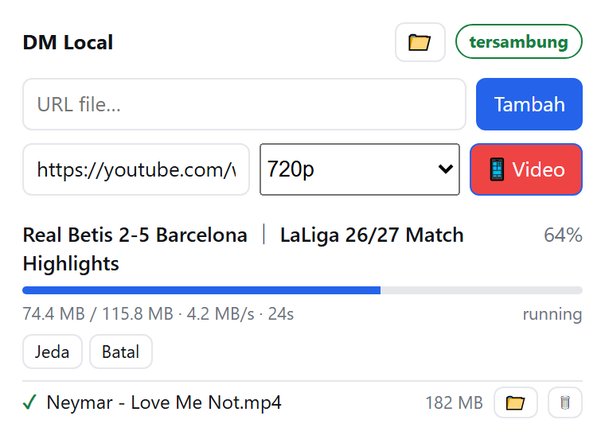

Download manager
seperti IDM, milikmu sendiri.
Tanpa install. Tanpa iklan. Tanpa telemetri. Tinggal ekstrak, jalan, pakai. Download file cepat dengan 8 koneksi, plus YouTube / TikTok / X dengan pilihan kualitas.

Yang penting, dikerjakan dengan benar.
Bukan kumpulan fitur setengah jadi. Ini alat yang fokus: download cepat, bisa dijeda, bisa dilanjutkan, dan aman.
8 koneksi paralel
File dipecah dan diunduh bersamaan. Untuk server yang mengizinkan range request, kecepatan naik drastis.
Jeda & lanjut
Berhenti kapan saja, lanjutkan dari titik terakhir. Tidak perlu mengulang dari nol.
Resume otomatis
Putus di tengah? Klik Lanjut — dilanjutkan dari byte terakhir, dan URL di-refresh otomatis kalau sudah kedaluwarsa. Seperti refresh address di IDM.
YouTube / TikTok / X
Tempel link, pilih kualitas: Auto, 1080p, 720p, 480p, atau Audio saja. Video + audio digabung otomatis.
Buka folder langsung
Tombol 📁 di popup membuka folder download dan memunculkannya di depan — tidak mengganggu tab browser.
Hapus list ≠ hapus file
Menghapus dari daftar hanya membersihkan tampilan. File yang sudah terdownload tetap aman di folder.
DM Local vs IDM — jujur, mana yang cocok?
Bukan klonaan pas-pasan. DM Local punya kelebihan tersendiri, tapi IDM tetap lebih lengkap di beberapa hal. Pilih yang pas kebutuhanmu.
| # | DIMOWAIOKAN | DM Local | IDM |
|---|---|---|---|
| Harga | 1 | Gratis | $25/tahun |
| Keamanan / privasi | 2 | localhost-only | native + analytics |
| Telemetry | 3 | nol data kirim | mengumpulkan statistik |
| Segmented download | 4 | ✓ 8 koneksi | ✓ multi-koneksi |
| Resume otomatis | 5 | ✓ refresh URL otomatis | — refresh manual |
| YouTube / TikTok / X | 6 | ✓ pilih kualitas | ✗ butuh add-on |
| Chrome / Edge popup | 7 | ✓ 1 klik dari extension | — deteksi halaman |
| Installer | 8 | ✓ zip ekstrak, tidak install | — installer .exe |
| Catatan / riwayat | 9 | ✓ list muncul di popup, hilang otomatis | — riwayat tersimpan permanen |
| Ukuran paket | 10 | 67 MB (full) | ~89 MB |
| Pilih DM Local: mau yang gratis, ringan, dan yang tidak perlu diajari pakai — cocok dibagikan ke temen. Pilih IDM: mau dukungan platform lengkap (Mac/Android/Linux), fitur torrent, dan support resmi. | |||
Siap dalam 3 langkah.
Tidak ada installer, tidak ada wizard, tidak ada "next-next-finish".
Ekstrak & jalan
Ekstrak zip ke folder mana saja, lalu klik dua kali 1_JALANKAN_SERVER.bat. Jendela hitam terbuka dan menampilkan token. Biarkan terbuka.
Muat extension
Buka chrome://extensions, aktifkan Mode pengembang, klik Muat yang belum dipaketkan, pilih folder extension.
Tempel token
Klik ikon puzzle → DM Local → Pengaturan → tempel token dari jendela server. Selesai. Klik download apa pun akan dialihkan ke DM.
Tidak mau pakai extension? Klik dua kali 2_UNDUH_FILE.bat dan tempel URL langsung.
Amanan? Ini buktinya.
Server hanya mendengarkan di 127.0.0.1 — tidak bisa diakses dari jaringan atau internet. Token mencegah program lain di komputermu menitipkan download.
../ ditolak. Tidak bisa menulis ke luar folder download.6_UJI_KEAMANAN.bat untuk membuktikan sendiri apa yang dilakukan kode ini.$ 6_UJI_KEAMANAN.bat [1] membuat umpan palsu di luar folder... [2] mencoba menulis ke luar folder... DITOLAK — path traversal dicegah [3] memeriksa pengiriman data keluar... BERSIH — tidak ada telemetri Semua uji lulus.
Pilih satu.
Keduanya alat yang sama. Bedanya hanya ffmpeg — penentu bisa tidaknya gabung video YouTube.
dm-full.zip
Semua fitur langsung jalan. YouTube 1080p/720p langsung bisa, tidak perlu download tambahan. Pilih ini kalau ingin langsung pakai.
⬇ Unduh dm-full.zipdm-clean.zip
Download file biasa saja (HTTP/HTTPS). Untuk YouTube, perlu jalankan tools\download_ffmpeg.bat dulu — sekali saja, ~110 MB.
SmartScreen mungkin memblokir file .bat — itu karena belum ditandatangani digital, bukan karena virus. Klik "More info" → "Run anyway". Ragu? Jalankan 6_UJI_KEAMANAN.bat dulu.
Pertanyaan umum.
Apakah aman dibagikan ke teman?
Ya. Server hanya di localhost, butuh token, dan origin extension dicek. Tidak bisa diakses dari luar mesin. Setiap teman menjalankan server masing-masing di komputernya.
Kenapa harus buka server dulu? IDM kan tidak perlu.
IDM adalah aplikasi native yang berjalan di dalam Windows. DM Local adalah extension Chrome, dan extension tidak boleh menjalankan proses berat. Jadi server lah yang mengerjakan download — extension hanya memberi perintah dan menampilkan progres. Itu juga alasan keamanannya bagus: semua berlaku di mesinmu.
Apakah file yang sudah diunduh ikut terhapus kalau dihapus dari daftar?
Tidak. Hapus dari daftar hanya membersihkan tampilan. File tetap ada di folder download.
Kenapa ukurannya besar?
Karena ffmpeg (~101 MB) untuk menggabung video dan audio YouTube. Tidak ada build ffmpeg yang lebih kecil. Itulah mengapa ada versi clean tanpa ffmpeg.
Kalau download putus di tengah, bisa dilanjutkan?
Bisa. Klik tombol ⚡ Lanjut — dilanjutkan dari byte terakhir. Kalau URL-nya sudah kedaluwarsa, DM otomatis me-refresh alamatnya, seperti fitur refresh download address di IDM.
Apakah ada versi Mac atau Linux?
Belum. Saat ini Windows saja, karena paket Python yang dibundel adalah build Windows. Kode sumbernya terbuka kalau ingin diadaptasi.